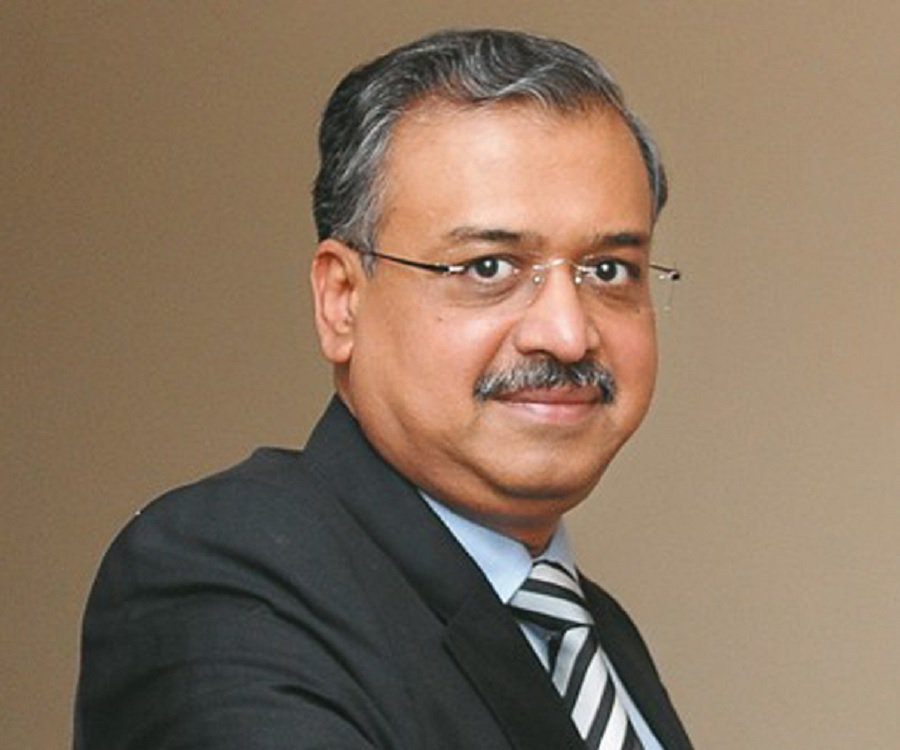

Dilip Shanghvi (born 1 October
1955) is an Indian businessman and one of the richest persons in India. He
founded Sun Pharmaceuticals with a partner, Pradeep Ghosh.The Government of
India awarded him the civilian honour of the Padma Shri in 2016Dilip was born in
small town of Amreli in Gujarat to Shantilal Sanghvi and Kumud Sanghvi. Shanghvi
earned a Bachelor of Commerce degree from the University of Calcutta.He is an
alumnus of J. J. Ajmera High School and Bhawanipur Education Society College,
from where he did his schooling and graduation, respectively.
He is married to Vidhi. The
couple have a son, Aalok and daughter Vidhi from their marriage. Both of whom
are currently working in Sun Pharmaceuticals
He started by helping his
father in his wholesale generic drugs business in Kolkata. It was during his
work as a drugs distributor at Kolkata, he thought of manufacturing his own
drugs instead of selling others' products.
Dilip Shanghvi started Sun
Pharmaceutical Industries with capital of 10,000 in 1982 at Vapi, with one
psychiatry drug and a partner, Pradeep Ghosh. In 1997, Sun acquired Caraco
Pharma, a loss-making American company, with the aim of expanding Sun's reach in
the United States.
As of August 2014, he had a
net worth of $17.2 billion
Sun also acquired Israel's Taro Pharma in
2007. Shanghvi stepped down as Chairman and CEO in 2012 and chose Israel Makov,
formerly CEO of Teva Pharmaceuticals, as his successor; Shangvi became Managing
Director. In April 2014 Sun, Ranbaxy, and Daiichi Sankyo (the majority
shareholder in Ranbaxy) agreed that Sun would acquire all outstanding shares of
Ranbaxy for $3.2B in Sun stock and that Sun would take on $800M in Ranbaxy debt;
the deal closed in March 2015 and made Sun the largest drug company in India and
the fifth largest in the world, and made Daiichi the second largest shareholder
in Sun.